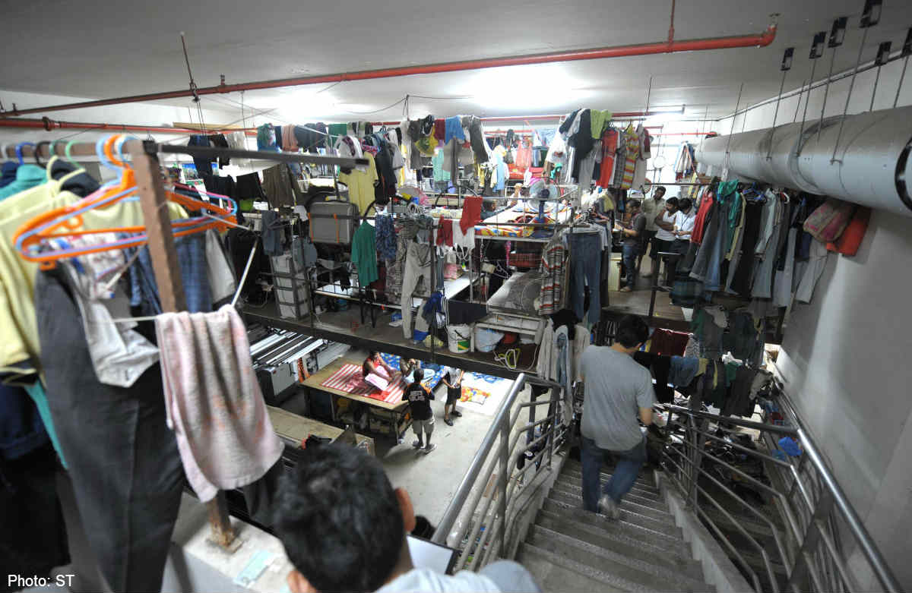

Nowadays, in Singapore, foreign labour can be seen along all walks of life. Ever since the 1980s, there has been an increasingly large influx of immigrants travelling into Singapore to work. These foreigners have greatly benefited Singapore’s economy and development, building our HDBs and managing our businesses.
However, many Singaporeans have spoken against immigration, spreading xenophobic sentiments among the people. It may not seem prevalent in Singaporean society today, but the danger of xenophobia is still very much present, ready to emerge any time.
To begin explaining the discrimination towards immigrants and foreign labour in Singapore, we first need to discover the causes of the large influx of immigrants into Singapore.
Liberal Immigration Policies
In the 1980s, Singapore was experiencing a severe lack of natural growth within the local population. Furthermore, there were more elderly for the working population to care for, not to mention a need for more manpower to power our labour-intensive industries.
In order to counteract Singapore’s low natural birth rate and need for low-skill labour to take up jobs and fuel industries, the government adopted more liberal policies such that immigrants would find it easier to live and work in the country.
For instance, Singapore does not have many restrictions for immigrants besides a mandatory work permit, making immigration here relatively open-door. Hence, Singapore is much easier to enter for jobs, attracting foreigners to migrate here.
Economic Opportunities
In addition, there are many job opportunities in Singapore, due to the high volume of businesses and corporations here.
Multinational corporations(MNCs), like Apple and McDonald’s, are attracted by our high political stability, with Singapore ranking as the 7th least corrupt nation in the world on Transparency International’s Corruption Perceptions Index in 2017, as well as the ease of doing business here, and our well-established judiciary system.
Over 7000 MNCs have set up businesses and operations across the island, creating job opportunities and a reputation for Singapore as a business hub.
From higher-skill intensive industries like electronics and healthcare to labour-intensive industries like construction, there are a high amount of jobs readily available for immigrants to take up, adding to the incentive of immigrating to Singapore to work.
Large Influx of Immigrants
To say that the number of immigrants that came to Singapore due to these factors was large would be an understatement. From 1990-2000, immigration growth exceeded the natural growth of the population, accounting for nearly two-thirds of the population increase in Singapore.
Furthermore, the number of foreign workers has been increasing steadily. As of June 2014, the foreign population of Singapore, consisting of permanent residents(PRs) as well as non-residents with work visas, and foreign students, took up 38.9% of Singapore’s total population of 5.47 million, comprising a huge part of the population (“Population in Brief 2014”, 2014).
 A large group (but a small percentage) of foreign workers in Singapore heading off to work
A large group (but a small percentage) of foreign workers in Singapore heading off to work
Clearly, foreign immigrants play a large role in Singaporean society, a role that gets larger each year as they take up more of the population and workforce.
Resultant Social Issues
But with this influx, it was inevitable for problems to arise from this massive influx of foreign labour. While more immigration helped the economy, the government’s open-door immigration policies have sparked backlash from the locals towards these foreign workers.
Immigrants have come under fire for many social issues, such as overcrowding, suppressing wages, and increased competition against locals for jobs and income.
Most foreign workers do not mix well with Singaporeans, with various accents and features. In addition, the majority of foreign workers in Singapore work in the domestic services or construction industries. This places them in the bottom 10% of Singapore’s population in terms of income, also leading them to work and live under poor conditions.
 The hard life of a foreign worker in SingaporeWith so many cultural, racial, and socio-economic differences between the two groups, the biases and prejudices between the two groups are widening, worsening the negative perceptions of the social issues listed below.
Competition For Jobs
Since the baseline salary for most foreign workers in Singapore of $2200 a month is lower than most post-graduates would like to earn (Ministry of Manpower, 2018), many see foreign workers as competitors for job opportunities.
Some even despise the foreign workers, because they are willing to do the same work as them for less income, causing the locals to find it harder to get jobs and raise their own salaries.
Questioning National Identity
With a significant part of Singapore’s population being immigrants coming from other countries with different cultures, and a large focus by the government on productivity through immigration, it is harder for the unique norms and values of the Singaporean identity to stand out.
Some locals have even voiced out anti-immigration sentiments and thoughts online, citing the presence of immigrants as a barrier against a united Singapore and national values, since many immigrants in Singapore do not understand or adopt norms like Singlish, adding to discontent against foreign workers.
Xenophobic Sentiments Spreading
Hence, the discontent and discrimination caused by these social issues grows.
One major example of this prejudice can be observed in the Little India Riots on 8 December 2013, where a foreign Indian construction worker, was hit and killed by a private bus along the roads of Little India. This accident grew in an unruly crowd of over 300 foreign workers rioting along Little India, attacking the bus and other vehicles, and even killing two policemen in the process.
From this incident, unprecedented in over 40 years, the prejudices and underlying hatred between foreign workers and immigrants were highlighted. Several anti-immigrant and xenophobic messages, like the one below, were posted online for everyone to see.
One of the many spiteful and xenophobic reactions to the Little India riotsFinding A Balance
In the 2011 National Day Rally’s Prime Minister’s Speech, Prime Minister Mr. Lee Hsien Loong admitted that “managing the inflow of foreign workers and immigrants” would take time to accomplish, since it was a complicated issue. He said this:
"we have to accept that if we bring down the number of foreigners, slow the inflow, it means slower growth, less economic growth, somewhat less vitality, companies will come here not so vigorously or they may choose to expand elsewhere and we will have less resources to improve our lives. You have got to find the right balance." ~ Lee Hsien Loong, National Day Rally 2011 Speech
He stated that a balance had to be struck, since immigrants would still be integral to Singapore’s economy rising, even despite “Singaporeans [worrying] about competition from foreigners” in both education and the workforce.
Hence, from the basis of maintaining this balance between economic growth and benefiting Singaporeans’ lives, I propose two solutions to fix the problem of discrimination and prejudice towards foreign workers in Singapore.
Improve Infrastructure to Accomodate the Foreign Workers
Since the influx of immigrants is integral to Singapore’s development, a better solution than reducing the number of immigrants would be to solve the infrastructural problems within our existing policies to better accommodate foreign workers within Singapore.
For example, to solve the problem of competition with foreign workers over jobs, the government can upgrade the skills of Singaporean workers with programmes like SkillsFuture, allowing them to enter higher-skilled jobs and sectors, while the foreign workers can continue working in the labour-intensive sectors like construction.
SkillsFuture - one of the schemes to help Singaporean improve their skills in the workplaceUnlike policies like the Foreign Worker Levy system, this action would reduce competition without sacrificing the number of foreign workers immigrating into Singapore.
In addition, to reduce the discontent from overcrowding in the population, physical infrastructure has to change as well.
Housing schemes will have to take the large number of foreign workers in mind, allowing for more space and necessities like water, ensuring that the standard of living for foreign workers are sufficiently high.
Transport systems will also have to change, increasing MRT and bus efficiency and transport capacity being of the utmost importance to support both the foreign and local working populations’ travels.
Through these infrastructural changes, the negative impacts felt by both locals and foreign workers will be reduced, allowing for the standard of living on both sides to increase. If the people have less problems to complain about, we can reduce hatred, and xenophobia amongst the people, making sure events like the Little India Riot don’t happen again.
Educate our Youth
Sure, this sounds overdone, but educating Singaporean youths against xenophobia towards foreign workers would make a huge difference in the fight against this discrimination. If we can advocate a understanding and acceptance of other cultures in Singapore, less people would suffer from xenophobia, curbing the problem of discrimination towards foreign workers.
Especially amongst young children and teenagers in their formative years, events such at the Little India riots could heavily influence the mindsets and attitude of the future workforce in Singapore, possibly worsening the negative prejudices that currently exist.
Through targeting those in primary and secondary schools, educating them through talks, or simply through increased interaction with foreigners such as exchange programmes or workshops, the younger generation in Singapore would be less influenced by the negative perceptions of foreigners today.
Instead of trying to abolish the culture of foreigners, the youth can learn to inculcate it into the SIngaporean culture. In addition, they can pay less attention to the differences between themselves and foreigners, instead looking to the benefits that cooperation can bring the country.
This solution would take some time to take effect, but its long-term effects would definitely be more meaningful in teaching the future working and voting population to acknowledge the importance of foreign workers for our society and economy.
Conclusion
In conclusion, xenophobia and discrimination against foreign workers in Singapore is a hard problem to tackle, in a way inevitable as long as we depend on immigrants to build our economy.
However, if we make the necessary changes to our work policies and physical infrastructure, and also educate the future workforce against such xenophobic notions, we can reduce the discrimination against the foreign workers in Singapore.